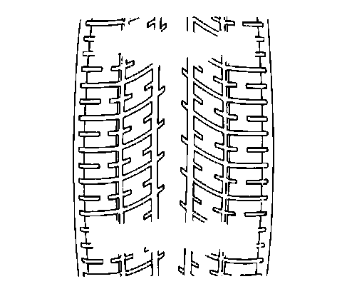

Tread Wear Indicators Description
Tread Wear Indicators Description
Tread Wear Indicators Description:

The original equipment tires have tread wear indicators that show when you should replace the tires.
The location of these indicators are at 72 degree intervals around the outer diameter of the tire. The indicators appear as a 6 mm (0.25 in) wide band when the tire tread depth becomes 1.6 mm (2/32 in).